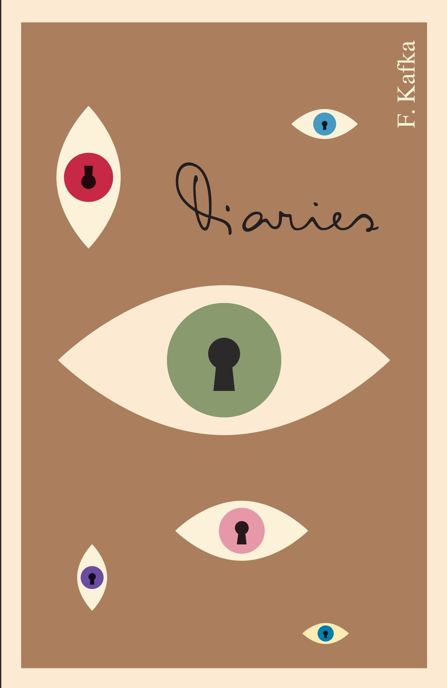
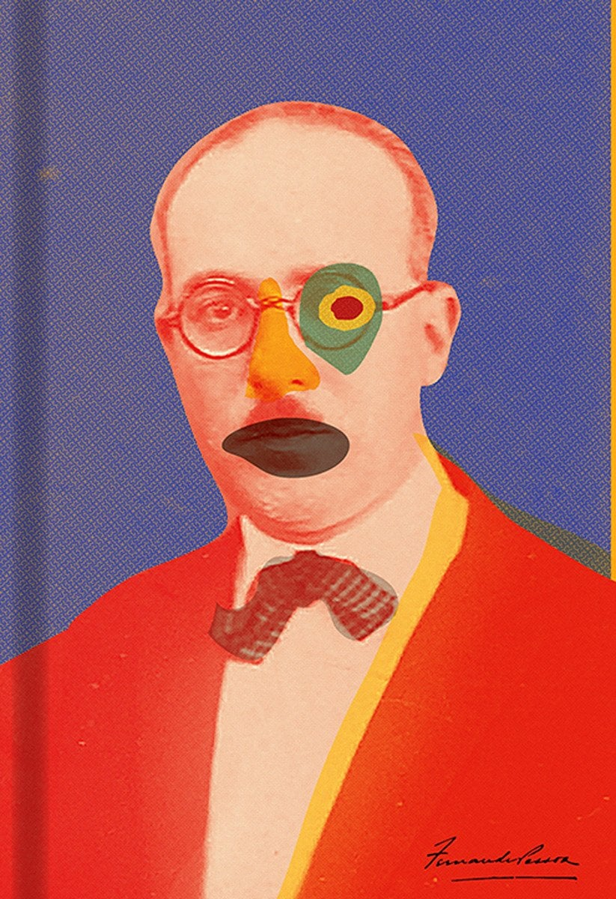
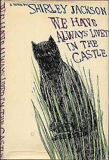
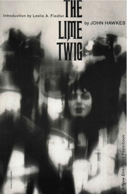

Christina: Let’s start at the beginning. What do you remember reading as a kid?
Christina: What are your top five books?
Leff interview series: Editor to editor
Christina is an editorial associate at Leff.
David is an editor at Leff.
No matter the form—reports, white papers, or surveys—editing requires an analytical mind-set. And for editors, that kind of puzzle-solving is actually fun.
In this Leff Q&A, editorial associate Christina chats with editor David about
the editorial process, the similarities and differences between forms, and of
course, books.
David: This is really hard.
The Book of Disquiet by Fernando Pessoa will always be number one. Pessoa wrote under dozens of pseudonyms, and he created full personalities, backgrounds, and histories for all these different authors that existed within him. The Book of Disquiet is, essentially, a collection of writings from these different personalities, a so-called fact-less autobiography. It’s a book that you can go to at any point in your life and continue to find new things.
Outside of that, Clarice Lispector’s The Passion According to G.H. is definitely a favorite. It’s a book about a woman who kills a cockroach. That’s it. That’s the whole thing, at least in terms of what actually happens. She kills a cockroach by shutting a wardrobe door on it and then has an existential crisis about it; it’s amazing in the way it creates so much depth out of such a seemingly small event.
The Lime Twig—by John Hawkes, who helped shift literature from modernism to postmodernism. He famously claimed that the enemies of the novel were plot, character, setting, and theme.
We Have Always Lived in the Castle by Shirley Jackson is another favorite—a perfect novel.
And The Diaries of Franz Kafka, 1910–1923, because that’s another book I can come back to at any point in my life, that continues to evolve. His diaries are great because there’s no artifice. I respect artifice, and I really like it, but he’s not writing with any sort of audience expectation. It feels very pure.

Christina: Can you talk a bit about your first professional editorial experience?
David: I started editing in college, taking on freelance copy-editing jobs through some of my professors. I was in a fiction department at an art school and learned early on that if I was going to study writing then I needed to find a way to make money. Eventually I became one of the student editors of the program’s literary magazine, and that was the first time I got real exposure to working on a book, working on a team, giving substantive edits, and being responsible for reviewing proofs. I loved the process and have continued to seek out editorial work ever since. I’ve done a little bit of everything: I’ve indexed legal texts. I’ve worked for nonprofits. I’ve worked for corporations. Wherever the language is, I’m drawn to it. Someone needs to help shape it. Every institution needs to have a voice.
Christina: What do you enjoy about the writing and editing process?
David: Being left alone [laughs]. Look, I like working on a team, don’t get me wrong, but the thing I like most about the editing process is sitting down and being with my thoughts—processing and working through a sentence in a logical manner. Connecting one sentence to another sentence. That’s what
I really enjoy. I consider it puzzle-solving. I love being suspended with just the language, figuring out the best way to approach
it and then seeing where that goes.
Christina: Speaking of approaches, a poem and a report couldn’t seem more different, but what similarities do you see between them?
David: Ultimately, anything put into language has to have form, whether that’s a lack of form or a highly organized structure. How something is written is just as important as what it says. A poet who’s writing a poem or an author who’s writing a report is still making decisions about how to convey ideas and concepts to the reader. That decision-making fascinates me. I love being confounded by a poem, and asking myself: Why did they make these decisions? Why did they break a line here? Why did they choose this word? Why did they create this image?
A report functions in the same way. You still have to organize words to create comprehension. And it still involves defining, categorizing, and synthesizing information. But unlike a poem, it has to be clear. Reports remove any confusion. I like the idea of both of those things being two extremes. And I think both can be satisfying to read for different reasons.
Christina: As editors, we often edit “in the wild,” meaning we mentally edit the copy we encounter—from bar menus to the books we read for pleasure. Is this something you catch yourself doing?
David: I’ve heard a lot of editors say the more they edit, the less joy they have when they’re reading because they’re constantly using that part of their brain. I actually try to turn it off. I get out of the office, and I’m still able to read for pleasure. I refuse to give that up. But man, it’s hard.
I read a lot on a Kindle because it’s convenient. And a lot of books that are on Kindle have been digitally converted and are riddled with transcription issues. And that kills me. It makes it so difficult to engage with the text. That’s one thing that I’ve been very aware of lately. It speaks to a bigger problem: we have all this information, all this physical media, and it’s all being put somewhere else. I worry about what’s getting lost in translation.
Christina: One last question: Is long-form writing dead?
David: No, long-form is not dead. There’s always going to be
a need to change speeds, drop out of the fast cycle of day-to-day life, and find a more meditative space. Long-form allows
for that. I think it’s important to find those moments when you can change your relationship to time a little bit by delving into something, whether it be a New Yorker article or a 700-page novel, finding those new dimensions. Then you can step back into the world and reengage with a changed perception. It’s
an important back-and-forth that I need in my life. It keeps
me curious.
I’d like to believe that other people find the world just as strange and fascinating as I do. The moment you lose that, you lose that sense of connection to things that are bigger than yourself. Then it’s all over.




David: I was always drawn to spooky stuff. I think the books that made me really fall in love with storytelling were the Scary Stories to Tell in the Dark books. They were incredible because the stories were fairly simple but tapped into fears that I think a lot of children have. And the illustrations were mind-blowing. They opened up so much more space in the stories than existed in just the language. And that’s when I started to realize image had real power, and stories could tap into that. I started seeking out more stories that exercised my mind’s eye. That led to Stephen King and things like that as I got older, things that might show me something I’d never seen before.
https://www.cinemablend.com/news/2478144/scary-stories-to-tell-in-the-dark-5-stories-from-the-books-wed-like-to-see-in-the-sequel